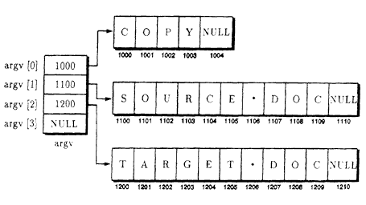

Как вы знаете, большинство команд, вводимых вами в ответ на системную подсказку, позволяют включать дополнительную информацию, такую как имя файла. Например, при использовании команды MS-DOS COPY для копирования содержимого одного файла во второй файл вы указываете в командной строке имена обоих файлов. Аналогично, если ваш компилятор основан на командной строке, вы должны включать имя вашего исходного файла при вызове компилятора. В этом уроке рассмотрены способы, с помощью которых ваши программы на C++ обращаются к аргументам командной строки. К концу данного урока вы освоите следующие основные концепции:
Способность программ обращаться к аргументам командной строки повышает количество способов, которыми вы можете использовать одну и ту же программу. Например, вы можете создать свою собственную программу, используемую для копирования любого исходного файла, который вы указываете в качестве первого аргумента командной строки, в целевой файл, который вы указываете в качестве второго аргумента командной строки.
Если вы запускаете программу из системной подсказки, командная строка, которую вы вводите, становится вашей командной строкой:
С:\> COPY SOURCE.DOC TARGET.DOC <ENTER>
В данном случае командная строка указывает команду (COPY) и два аргумента (имя файлов SOURCE. DOC и TARGET. DOC). Чтобы разрешить вашей программе доступ к командной строке, C++ передает два параметра в функцию main:
void main(int argc, char *argv[])
Первый параметр argc содержит количество элементов в массиве argv. Например, в случае предыдущей команды COPY параметр argc должен содержать значение 3 (он включает имя команды и два аргумента). Следующая программа SHOWARGC.CPP использует параметр argc для вывода количества аргументов командной строки:
#include <iostream.h>
void main(int argc, char *argv[])
{
cout << "Количество аргументов командной строки равно " << argc << endl;
}
Выберите время для эксперимента с этой программой, вызывая ее с разным количеством параметров, как показано ниже:
С:\> SHOWARGC А В С <ENTER>
Количество аргументов командной строки равно 4
В зависимости от типа компилятор может рассматривать аргументы, которые группируются внутри двойных кавычек, в качестве одного аргумента:
С:\> SHOWARGC "Это один аргумент" <ENTER>
Количество аргументов командной строки равно 2

Рис. 36. Массив argv указывает аргументы командной строки.
Второй параметр функции main с именем argv представляет собой массив указателей на символьные строки, которые содержат индивидуальные части командной строки. Например, рис. 36 иллюстрирует, как элементы массива argv могли бы указывать записи командной строки.
Следующая программа SHOWARGV.CPP использует оператор for для вывода элементов массива argv (командная строка программы). Программа запускается с первого элемента массива (имя программы) и затем выводит каждый элемент, пока значение переменной цикла не станет больше, чем argc:
#include <iostream.h>
void main(int argc, char *argv[])
{
int i;
for (i = 0; i < argc; i++) cout << "argv[" << i << "] содержит " << argv[i] << endl;
}
Откомпилируйте и запустите эту программу, используя командную строку, подобную следующей:
С:\> SHOWARGV А В С <ENTER>
argv[0] содержит SHOWARGV.EXE
argv[l] содержит А
argv[2] содержит В
argv[3] содержит С
Доступ к аргументам командной строки
Для увеличения количества задач, выполняемых программой, C++ позволяет вашей программе обращаться к аргументам командной строки, используя два параметра, которые C++ передает в main. Первый параметр argc содержит количество аргументов командной строки (включая имя программы). Второй параметр argv представляет собой массив указателей на символьные строки. Каждая символьная строка соответствует аргументу командной строки. Чтобы обратиться к аргументам командной строки, измените заголовок функции main, как показано ниже:
void main(int argc, char *argv[])
Как вы уже знаете, программы C++ используют символ NULL для завершения символьной строки. Подобным способом C++ использует символ NULL, чтобы отметить последний элемент массива argv. Следующая программа ARGVNULL.CPP изменяет оператор for предыдущей программы, чтобы выполнять цикл по элементам argv, пока текущий элемент argv не будет равен NULL:
#include <iostream.h>
void main(int argc, char *argv[])
{
int i;
for (i = 0; argv[i] != NULL; i++) cout << "argv[" << i << "] содержит " << argv[i] << endl;
}
Как вы уже знаете, C++ позволяет вам обращаться к элементам массивов, используя указатели. Следующая программа ARGVPTR.CPP трактует argv как указатель на указатель символьной строки (другими словами, указатель на указатель), чтобы вывести содержимое командной строки:
#include <iostream.h>
void main(int argc, char **argv)
{
int i = 0;
while (*argv) cout << "argv[" << i++ << "] содержит " << *argv++ << endl;
}
Выберите время, чтобы проанализировать объявление параметра argvв main:
void main(int argc, char **argv)
Первая звездочка в объявлении сообщает компилятору C++, что argv представляет собой указатель. Вторая звездочка сообщает компилятору, что argv представляет собой указатель на указатель — в данном случае указатель на указатель типа char. Представьте argv как массив указателей. Каждый элемент массива в данном случае указывает на массив типа char.
Следующая программа FILESHOW.CPP использует аргументы командной строки для вывода содержимого указанного пользователем файла на экран. Например, чтобы использовать программу FILESHOW для вывода содержимого файла AUTOEXEC.BAT из корневого каталога, ваша командная строка становится следующей:
C: \> FILESHOW \AUTOEXEC.BAT <Enter>
Следующие операторы реализуют программу FILESHOW.CPP. Эта программа начинается с проверки параметра argc, чтобы убедиться, что пользователь указал файл в командной строке. Если пользователь включает имя файла параметр argc будет содержать значение 2. Далее программа открывает и выводит содержимое файла, используя методы, которые вы изучали в уроке 34. Как видите, если программа не может открыть указанный файл, она выводит сообщение об ошибке и завершается:
#include <iostream.h>
#include <fstream.h>
#include <stdlib.h>
void main(int argc, char *argv[])
{
char line[256];
if (argc < 2){
cerr << "Вы должны указать имя файла" << endl;
exit(1);
}ifstream input_file(argv[1]) ;
if (input_file.fail()) cerr << "Ошибка открытия BOOKINPO.DAT" << endl;
else{
while ((! input_file.eof()) && (! input_file.fail())){
input_file.getline(line, sizeof(line));
if (! input_file.fail()) cout << line << endl;
}
}
}
Как вы знаете, большинство операционных систем позволяют вам определять переменные среды, к которым ваши программы могут обращаться для определения разных параметров, таких как командный путь. Например, если вы используете среду MS-DOS, вы устанавливаете или выводите переменные среды с помощью команды SET. В зависимости от типа вашего компилятора вы можете обращаться к переменным среды из вашей программы, используя третий параметр main с именем env. Подобно параметру argv, параметр env представляет собой указатель на массив указателей на символьные строки. Также, подобно argv, C++ завершает этот массив символом NULL. Если ваш компилятор поддерживает параметр env, вы можете изменить заголовок функции main, как показано ниже:
void main(int argc, char *argv[], char *env[])
Следующая программа SHOWENV.CPP выполняет цикл по элементам массива env для вывода переменных среды программы:
#include <iostream.b>
void main(int argc, char *argv[], char *env[])
{
while (*env) cout << *env++ << endl;
}
Как видите, программа просто выполняет цикл по элементам массива env, пока не встретит указатель NULL, который указывает последнюю запись массива. Если вы откомпилируете и запустите эту программу, она выведет ваши переменные среды, как показано ниже:
С:\> SHOWENV <ENTER>
ТЕМР=С:\WINDOWS\TEMP
PROMPT=$p$g
COMSPEC=C:\WINDOWS\COMMAND.СОМ
РАТН=С:\WINDOWS;С:\DOS
Доступ к переменным среды
В зависимости от типа компилятора, ваши программы могут обращаться к переменным среды операционной системы, используя третий параметр функции main с именем env. Подобно параметру argv, параметр env представляет собой массив указателей на символьные строки, каждый из которых указывает переменную среды. Чтобы обратиться к переменным среды, используя параметр env, измените заголовок функции main следующим образом:
void main(int argc, char *argv[], char *env[])
Чтобы увеличить количество приложений, поддерживаемых вашей программой, C++ позволяет использовать аргументы командной строки. Из урока 37 вы узнаете, как с помощью макрокоманд и констант можно упростить ваше программирование или создать более удобочитаемый код. Однако, прежде чем перейти к уроку 37, убедитесь, что вы освоили следующие основные концепции:
- Когда вы запускаете программу из системной подсказки, информация которую вы вводите, становится командной строкой программы.
- Чтобы позволить вашим программам обращаться к командной строке C++ передает функции main два параметра: argc и argv.
- Параметр argc содержит количество аргументов командной строки.
- Параметр argv представляет собой массив указателей на символьные строки, каждая из которых содержит аргумент командной строки.
- В зависимости от вашего компилятора программа может обращаться к третьему параметру main с именем env, который представляет собой массив указателей на символьные строки, содержащие переменные среды.
Предыдущий урок | Следующий урок